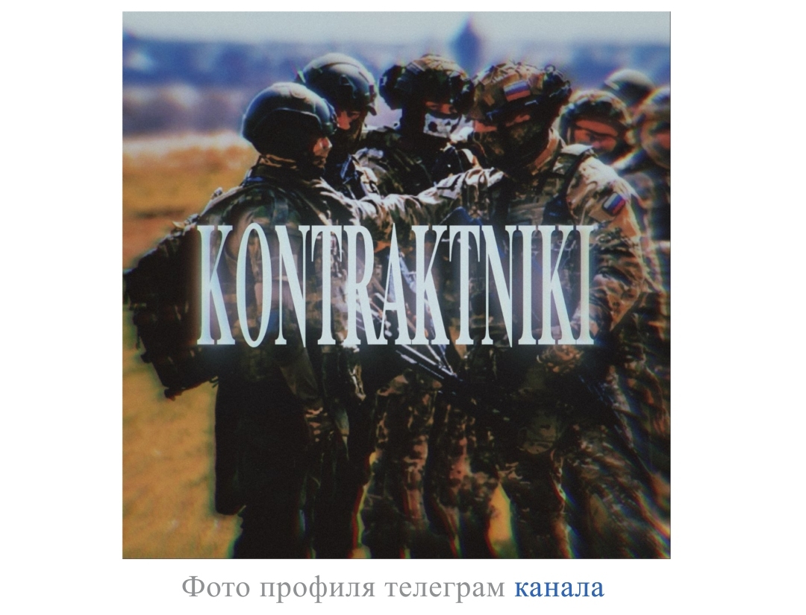

⠀ Статья⠀⠀Обсуждение
«Контрактники» представляют собой уникальный пример Telegram-канала [3], который пытается создать пространство для полярных точек зрения внутри пророссийского информационного поля. Жёсткие рамки, ограничивающие радикальную оппозицию, но допускающие умеренную критику, отражают сложность ведения дискуссий на острые темы [1]. Канал сочетает в себе функции клуба по интересам [4] (монтаж видео, военная техника), новостного агрегатора и политической площадки. Агрессивный стиль подачи, использование сленга и мемов характерны для его аудитории [2]. Девизом канала является фраза: «Контрактники — лучший выбор [5]».
Канал был основан пользователем с ником «Контрактник». Впоследствии управление перешло к новому владельцу, известному как «Монолитик» или «второй админ [3]». Чтобы предотвратить забрасывание канала, новый владелец провёл ребрендинг [1], добавив одну букву в название — «КонтрактникИ [4]», — объяснив это стремлением к «полноте картины [2]».
Основной контент канала составляют: · Видео-эдиты [3]: Короткие смонтированные ролики, посвящённые военной технике (Су-57, F-35, Ту-95, Ту-160, J-20), историческим событиям и аниме-персонажам. · Обсуждение военно-политической обстановки [1]: Публикация новостей, мнений и материалов, связанных с действиями России и других стран. · Туториалы [4]: Обучающие материалы по монтажу видео, созданию анимаций и переходов. · Пользовательский контент [2]: Посты и видео от участников и админов канала, размещаемые под соответствующими хештегами. · Дискуссии [5]: Обсуждения идеологий, исторических событий и полемика с оппонентами. Канал позиционирует себя как площадку для творчества и обмена мнениями, предоставляя участникам доступ к исходным материалам для монтажа.
«Контрактники» примечательны своей системой управления [2], которая подробно изложена в закреплённом сообщении канала. Основные правила для всех админов: 1. Запрещён любой спам и флуд [4]. 2. Запрещена поддержка терроризма [1]. Нарушение карается немедленным удалением. 3. Запрещён слив личной информации [5] о пользователях. Нарушение карается немедленным удалением. Особые правила для админов-критиков России: Для этой группы действуют ужесточённые трактовки [3] правил. Под поддержку терроризма для них подпадают: · Поддержка оккупации ВСУ любой части России · Поддержка РДК (Российского Добровольческого Корпуса) · Поддержка движения «Свободная Россия» При этом критика Владимира Путина, не переходящая в «радикальные взгляды», разрешена. Формальности для админки: · Админы берут на себя обязательство по продвижению канала · За нарушения выносятся предупреждения (3 для обычных админов, 1 для критиков) · Владелец канала оставляет за собой право снять любого админа в любое время
«Контрактники» представляют собой уникальный пример Telegram-канала [3], который пытается создать пространство для полярных точек зрения внутри пророссийского информационного поля. Жёсткие рамки [1], ограничивающие радикальную оппозицию, но допускающие умеренную критику, отражают сложность ведения дискуссий на острые темы. Канал сочетает в себе функции клуба по интересам [4] (монтаж видео, военная техника), новостного агрегатора [2] и политической площадки [5]. Агрессивный стиль подачи, использование сленга и мемов характерны для его аудитории. Девизом канала является фраза: «Контрактники — лучший выбор».